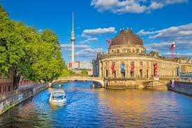
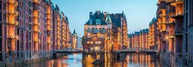

Berlín

Berlín es la capital de Alemania y una de las ciudades más fascinantes del mundo. Con una rica historia que abarca desde el Imperio Romano hasta la Guerra Fría y más allá, Berlín es un crisol de culturas, arte y vida nocturna.
Algunos de los lugares de interés más destacados de Berlín incluyen:
- La Puerta de Brandeburgo
- El Muro de Berlín y East Side Gallery
- La Isla de los Museos
- La Plaza Alexanderplatz
- El Reichstag
- El Barrio de Kreuzberg
Con una energía única y una mezcla de historia y modernidad, Berlín atrae a millones de visitantes cada año.
Múnich

Múnich, la capital de Baviera, es famosa por su arquitectura impresionante, sus jardines exuberantes y su ambiente festivo. Además de ser conocida por ser el lugar de celebración del famoso festival de la cerveza, Oktoberfest, Múnich ofrece una amplia gama de atracciones culturales y actividades al aire libre.
Algunos lugares que no te puedes perder en Múnich incluyen:
- La Marienplatz y el Ayuntamiento Nuevo
- El Palacio de Nymphenburg
- El Jardín Inglés (Englischer Garten)
- La Ópera Estatal de Baviera
- La Cervecería Hofbräuhaus
- El Museo de la BMW
Con su encanto bávaro y su ambiente acogedor, Múnich es una parada imprescindible en cualquier viaje a Alemania.
Hamburgo

Hamburgo, situada en el norte de Alemania, es una ciudad portuaria vibrante con una rica historia marítima y una escena cultural bulliciosa. Conocida como la "Puerta al Mundo", Hamburgo ofrece una combinación única de atracciones modernas y tradicionales.
Algunos de los lugares más destacados de Hamburgo son:
- El Puerto de Hamburgo
- La Iglesia de San Miguel (Michel)
- El Barrio de Speicherstadt
- El Mercado de Pescado (Fischmarkt)
- El Lago Alster
- El Barrio de St. Pauli y la Reeperbahn
Con su ambiente marítimo y su variada oferta cultural, Hamburgo atrae a visitantes de todo el mundo durante todo el año.